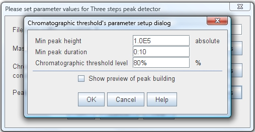
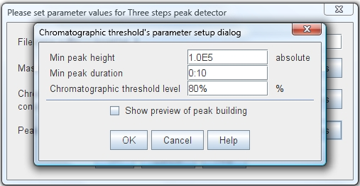

This peak recognizer first calculates a threshold level to use as a baseline. This is calculated using the Quantile (the percent of points below the given value) of mass spectrum peaks (intensities). After that it recognizes as a chormatographic peak any region (group of mass spectrum peaks together) with a intensity bigger than this threshold and has at least the minimum characteristics (duration, intensity).
This recognizer uses a three parameters:
"Min peak height"
This value sets the minimum acceptable height (intensity) for a chromatographic peak.
"Min peak duration"
This value sets the minimum acceptable length (time duration) for a chromatographic peak.
"Chromatographic threshold level"
This value sets the value of Quantile to use.
| Parameter setup dialog  |
|
Chromatogram plot showing detected peaks
|